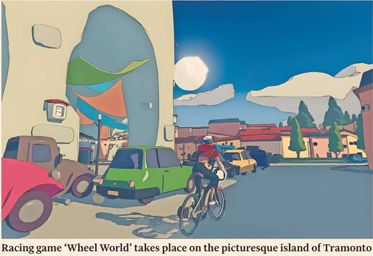

Whoever decided that Wheel World wouldn't force you to mash buttons to keep pedalling, my keyboard thanks you. The cycling game from California-based developer Messhof avoids the trope that saw Grand Theft Auto: San Andreas ruin several of my PlayStation 2 controllers — here you just hold down the space bar while instead focusing on gear shifts, staying in the slipstream and trying very hard not to hit traffic.
Wheel World is a racing game, albeit one disguised in the cel-shaded whimsy of an indie adventure. The island of Tramonto is home to all manner of motley challengers — pirates, chefs, robots, farmers — keen to race you. Winning, beating times or acquiring letters scattered across the racetracks in the style of old skateboarding games will increase your reputation, unlocking more of the world.
To what end? That’s a little harder to explain. You play Kat, a blue-haired woman with eyes like fried eggs and no obvious back-story beyond inexplicable cycling prowess. You awake one day in a grove of rust-coloured trees, a big green monolith looming in the distance.
Inside you meet Skully, an immortal bike demon with cranial form and an unimaginative name. Skully needs your help to ride the Chain of Life, a celestial slipstream linking your world and the Moon.
Why you (and why at all) is not obviously clear, beyond the fact that Skully couldn't find anyone else napping in a glade. But to help him, you'll need to recover the various legendary bike parts — saddle, frame, handlebars etc — that will grant you access to the Chain of Life.
These were pilfered by renowned cyclists across Tramonto, whom you'll have to race to win them back, all the while tricking out your rusty old bike with upgrades.
The bike has four stats: power, aero, handling and grip. Sourced from neat yellow boxes that wash ashore like the FedEx packages in Cast Away, or purchased using the currency imposed by a cycling mega-corporation, an array of parts will increase or decrease these stats; it’s up to you to balance or imbalance them in your favour.
The racing itself is surprisingly satisfying, combining the constant jostling and trash-talking of your opponents with the restful rhythms of the sport. It helps that the island of Tramonto is a terribly picturesque place, punctuated by bicycle vendors selling their wares from the pavements and makeshift ramps to launch you over the vineyards.
It is not a bug-free experience — particularly when the game insists that Kat jump back on her bike as soon as any dialogue ends, no matter how hemmed in she is by obstacles. And there are the usual racing-game frustrations that your AI opponents might not be working within the same laws of physics that you are. But there is some neat attention to detail, too: the vista from the main menu gliding neatly down to where you last left off, or the shimmering soundtrack by indie record label Italians Do It Better.
You wouldn't necessarily judge a Need for Speed or Burnout game for its lack of plot. But Wheel World, with its sparky dialogue and anti-corporate subtext, clearly aspires to something deeper. It is quirky, idiosyncratic and fun, but that’s about as far as it goes. You may be left feeling that it needs something else to drive it forward — something stronger than just pedals.